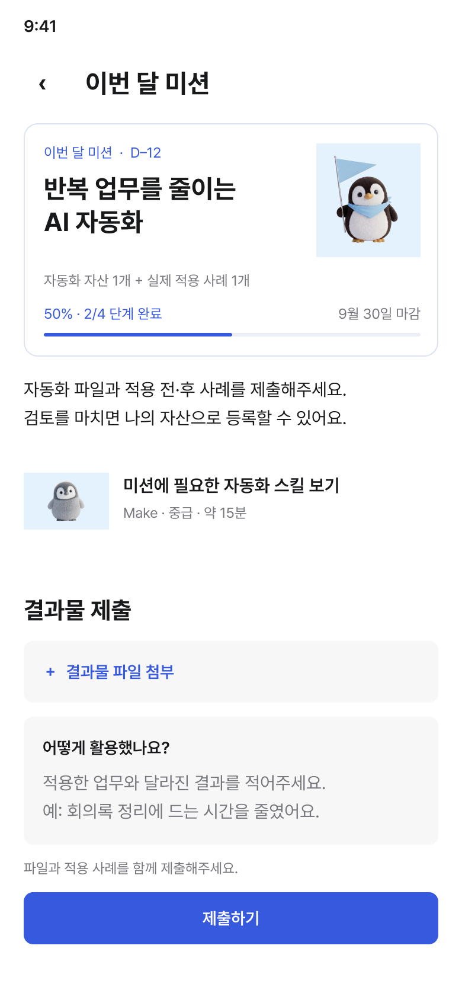

이번 달 미션에
도전해요
미션을 확인하고,
적용 사례를 준비해요.
이번 달 미션 · D–12
반복 업무를 줄이는
AI 자동화

자동화 자산 1개 + 실제 적용 사례 1개
50% · 2/4 단계 완료
9월 30일 마감

미션을 확인하고,
적용 사례를 준비해요.
이번 달 미션 · D–12
반복 업무를 줄이는
AI 자동화
자동화 자산 1개 + 실제 적용 사례 1개
50% · 2/4 단계 완료
9월 30일 마감